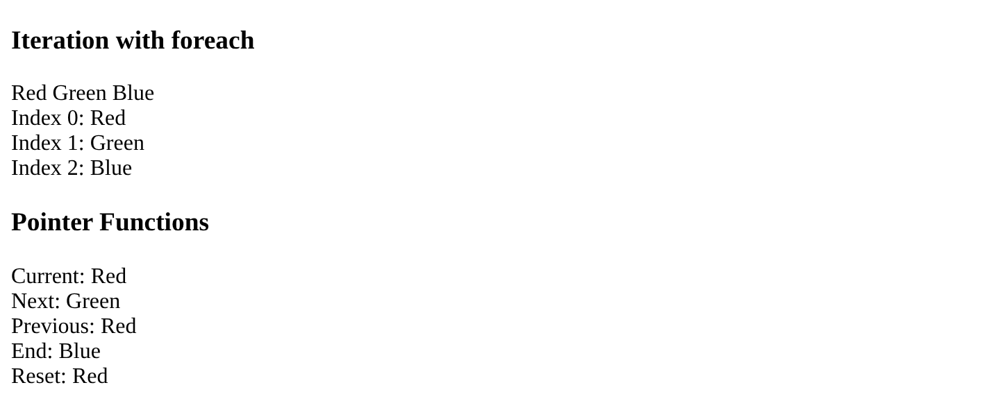

Write a PHP code to demonstrate various loop iterative functions.
Program 5.5: Demonstrating Array Iteration and Pointer Functions
current(), next(), prev(), end() and reset().Concepts used
foreach with values and with keys and values, the internal array pointer, the five pointer functions.
Test data: Array of colours: Red, Green, Blue.
Logic
- Create the array.
- Display all elements with foreach, first values only and then keys with values.
- Display the current element.
- Move the pointer with
next(),prev(),end()andreset(), displaying the value returned by each.
Code
<!DOCTYPE html><html lang="en"><head> <meta charset="UTF-8"> <title>Array Iteration and Pointer Functions</title></head><body> <?php $colours = ["Red", "Green", "Blue"]; // Iteration with foreach (PHP 8 replacement for each()) echo "<h3>Iteration with foreach</h3>"; foreach ($colours as $colour) { echo $colour . " "; } echo "<br>"; foreach ($colours as $index => $colour) { echo "Index $index: $colour<br>"; } // Pointer functions echo "<h3>Pointer Functions</h3>"; echo "Current: " . current($colours) . "<br>"; echo "Next: " . next($colours) . "<br>"; echo "Previous: " . prev($colours) . "<br>"; echo "End: " . end($colours) . "<br>"; echo "Reset: " . reset($colours) . "<br>"; ?></body></html>
Output
These are real screenshots, taken by running the program with the test data.

Understanding the output
The foreach section lists every element, first by value and then with its index, which is the PHP 8 way of performing the traversal that older programs carried out with each(). The pointer section shows the five values of the first five rows of Table 5.5: the pointer began at "Red", moved forward to "Green", came back to "Red", jumped to "Blue" and returned to "Red".
How it works
The first foreach loop prints the three values on one line, and the second prints each index with its value. These loops do not move the internal pointer, which therefore still stands on "Red" when the pointer functions begin. current() returns "Red" without moving the pointer. next() moves the pointer to "Green" and returns it, and prev() moves it back to "Red". end() moves the pointer to the last element, "Blue", and reset() returns it to the first element, "Red".
Run it yourself
Real PHP 8.3 runs inside your browser (nothing is sent to a server). Forms, links, cookies and sessions work as they do in XAMPP. The first run downloads PHP, so it needs internet and takes a few seconds.
Try this:
- Call
next()twice beforecurrent(). - Add a fourth colour and run again.
Running it in XAMPP
Save the file in C:\xampp\htdocs\phpbook\ch05 and open http://localhost/phpbook/ch05/pointer-functions.php.
Common mistakes
- Calling
each()to traverse the array, which stops the script in PHP 8 with Call to undefined functioneach(). - Expecting
current()to move the pointer. - Calling
next()afterend()and treating the returned false as an element. - Passing an expression, such as the result of another function, to
end()instead of a variable, which produces the notice Only variables should be passed by reference. - Note: This program uses foreach instead of
each(), becauseeach()was removed in PHP 8.0. The pointer functions used here are fully supported in PHP 8.